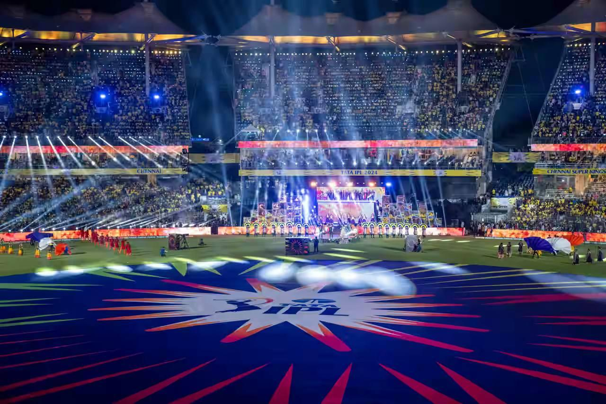
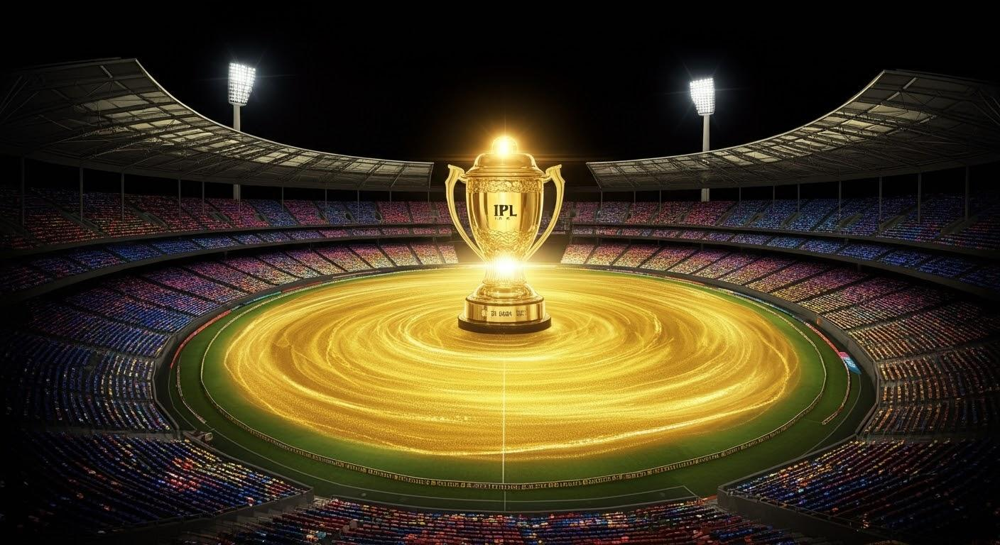
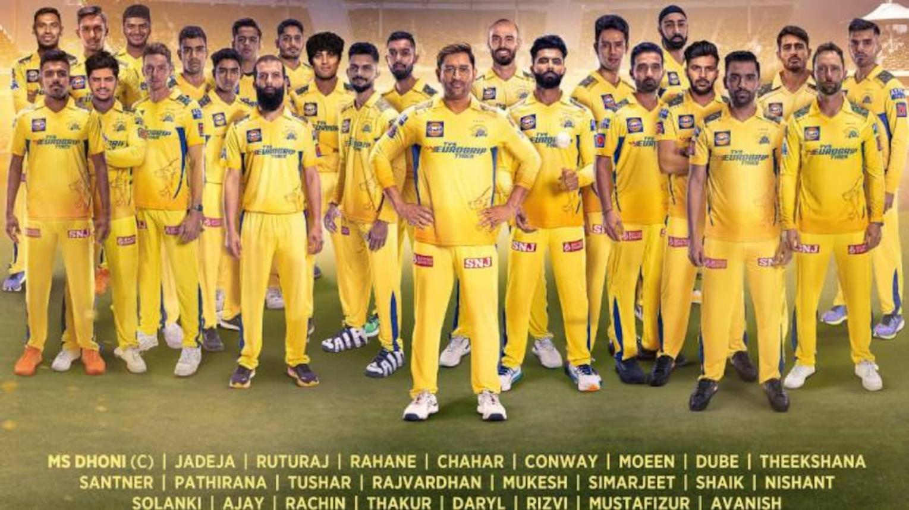
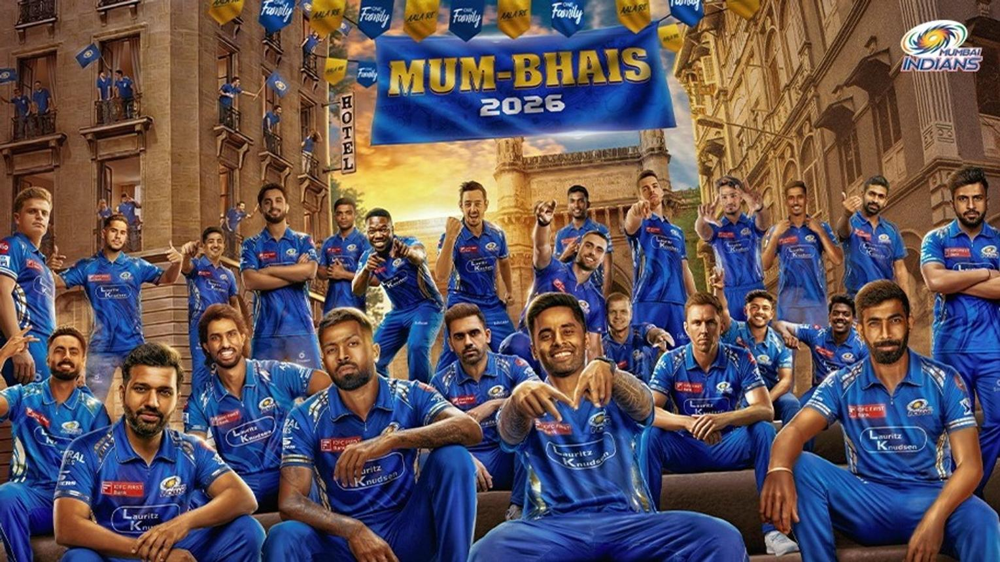
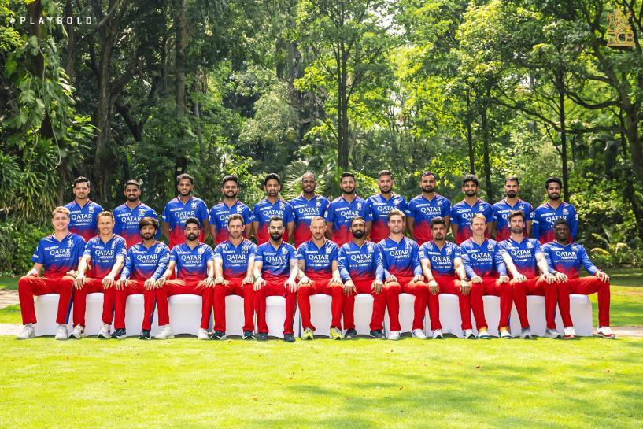
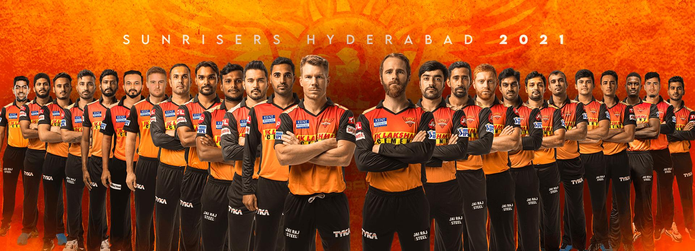
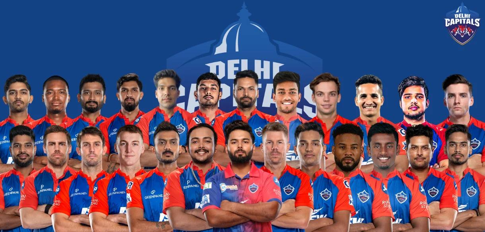
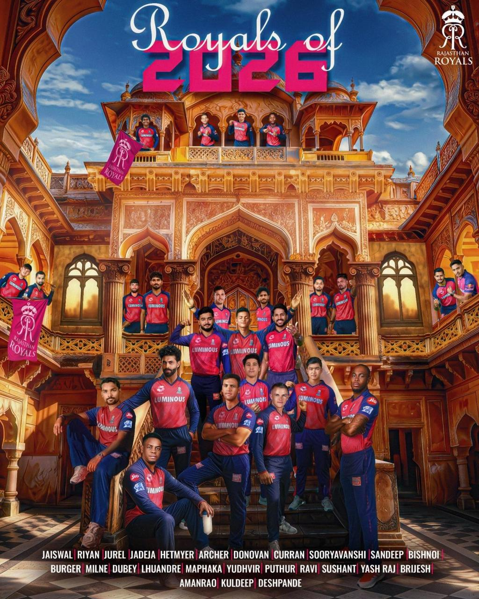
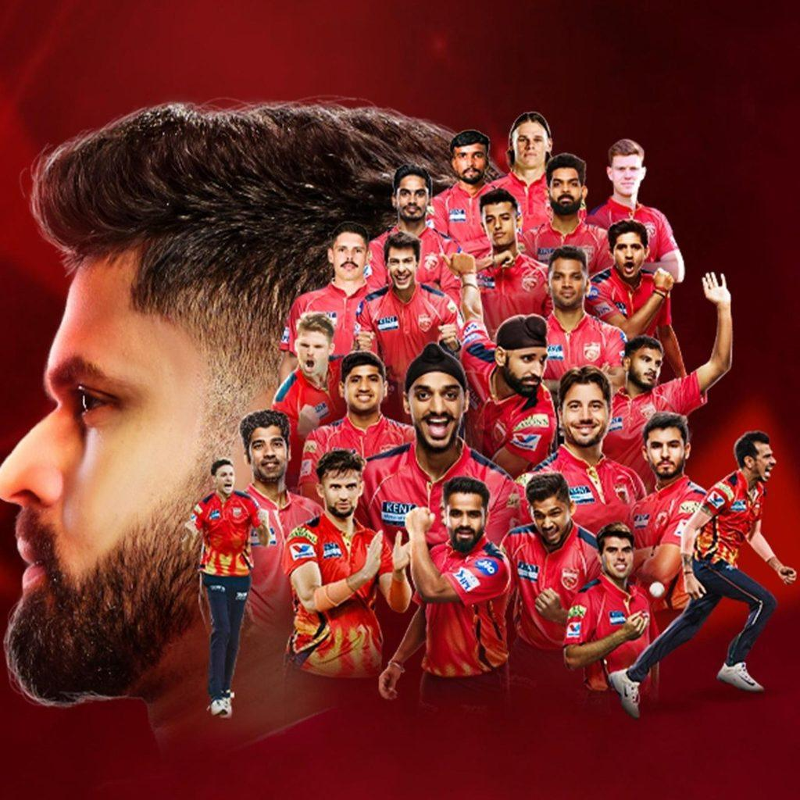
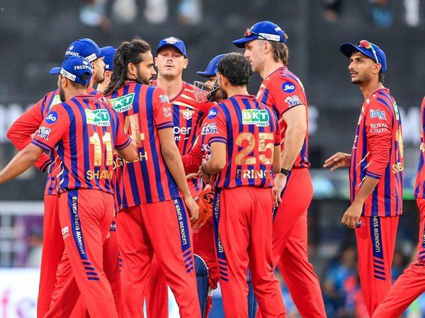

Welcome to the exciting world of IPL 2026, one of the biggest and most entertaining cricket tournaments in the world. The Indian Premier League brings together top international and Indian cricket players to compete in thrilling T20 matches filled with action, energy, and unforgettable moments. Millions of cricket fans eagerly wait every year to support their favorite teams and players throughout the season. IPL 2026 features powerful teams, explosive batting, amazing bowling performances, spectacular catches, and exciting last-over finishes. From legendary players to young rising stars, every match delivers entertainment and excitement for cricket lovers around the globe. Fans can enjoy live scores, match schedules, points table updates, team news, player statistics, and match highlights all in one place. This website is specially created for IPL fans to explore team details, upcoming fixtures, player information, and memorable moments from the tournament. Whether you support Chennai Super Kings, Mumbai Indians, Royal Challengers Bengaluru, Kolkata Knight Riders, or any other IPL team, this platform keeps you connected with all the latest IPL 2026 updates. Get ready to experience the festival of cricket with IPL 2026 and enjoy every six, wicket, and victory throughout the season.

IPL 2026 is one of the most exciting and popular T20 cricket tournaments in the world. The Indian Premier League brings together talented cricketers from different countries to compete in thrilling matches filled with action, entertainment, and unforgettable moments. The tournament features famous franchises such as Chennai Super Kings, Mumbai Indians, Royal Challengers Bengaluru, Kolkata Knight Riders, Sunrisers Hyderabad, Rajasthan Royals, Delhi Capitals, Punjab Kings, Lucknow Super Giants, and Gujarat Titans. Every team has star players, passionate fans, and a strong fighting spirit. IPL 2026 offers exciting batting performances, powerful bowling attacks, spectacular catches, and thrilling last-over finishes. Millions of cricket fans around the world watch the matches live and support their favorite teams. The league is not only about cricket but also about entertainment, teamwork, sportsmanship, and celebration. Stadiums are filled with cheering fans, colorful lights, music, and energetic atmosphere during every match. This website provides complete information about IPL 2026 including match schedules, points table, team details, player statistics, highlights, and latest updates. Fans can stay connected with all IPL news and enjoy the festival of cricket throughout the season.
IPL 2026 features ten powerful cricket teams competing for the championship trophy. Each team includes talented Indian and international players who deliver exciting performances throughout the tournament. Fans support their favorite teams with great passion and energy during every match.
| S.No | Team Name | Team Image |
|---|---|---|
| 1. | Chennai Super Kings |  |
| 2. | Mumbai Indians |  |
| 3. | Royal Challangers Bengaluru |  |
| 4. | Sunrisers Hyderabad |  |
| 5. | Delhi Capitals |  |
| 6. | Rajasthan Royals |  |
| 7. | Punjab Kings |  |
| 8. | Lucknow Super Giants |  |
| Position | Team | Matches | Won | Lost | Points |
|---|---|---|---|---|---|
| 1 | Chennai Super Kings | 14 | 10 | 4 | 20 |
| 2 | Mumbai Indians | 14 | 9 | 5 | 18 |
| 3 | Royal Challengers Bengaluru | 14 | 8 | 6 | 16 |
| 4 | Kolkata Knight Riders | 14 | 8 | 6 | 16 |
| 5 | Sunrisers Hyderabad | 14 | 7 | 7 | 14 |
| 6 | Delhi Capitals | 14 | 7 | 7 | 14 |
| 7 | Rajasthan Royals | 14 | 6 | 8 | 12 |
| 8 | Punjab Kings | 14 | 5 | 9 | 10 |
| 9 | Lucknow Super Giants | 14 | 5 | 9 | 10 |
| 10 | Gujarat Titans | 14 | 4 | 10 | 8 |
IPL 2026 delivered some of the most exciting and unforgettable moments in cricket history. Fans enjoyed powerful batting performances, stunning sixes, brilliant bowling spells, spectacular catches, and thrilling last-over finishes throughout the tournament. Every team fought hard to secure victories and entertain millions of cricket lovers around the world. Star players showcased their talent with match-winning innings and outstanding performances under pressure.
M. Chinnaswamy Stadium is one of the most famous cricket stadiums in India. It is the home ground of Royal Challengers Bengaluru in the Indian Premier League. The stadium is known for its electric atmosphere, passionate cricket fans, and exciting IPL matches. The stadium has hosted many memorable cricket matches including IPL games, international matches, World Cup matches, and domestic tournaments. Due to its shorter boundaries and batting-friendly pitch, fans often witness big sixes and high-scoring matches here. The stadium is also famous for its modern facilities and eco-friendly initiatives like solar-powered electricity systems. Thousands of cricket fans visit the stadium every year to enjoy live matches and support their favorite teams.
Email : ipl2026@gmail.com
Phone : +91 9876543210
YouTube: Chennai Stadium Zone
Facebook: Chennai stadium center
Location : Chennai, India